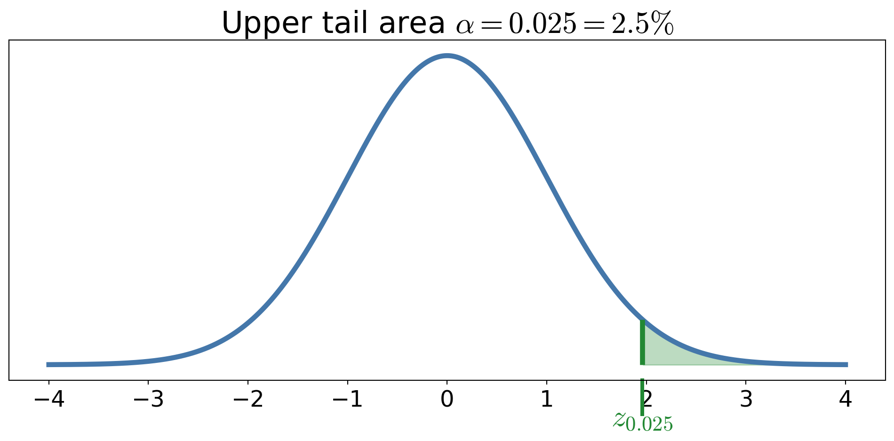
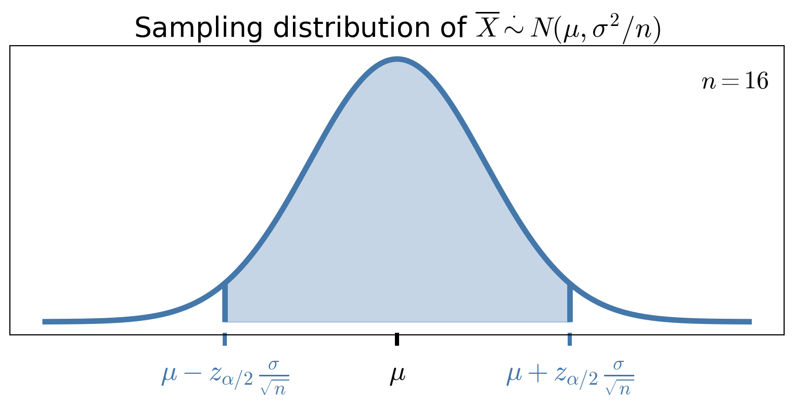
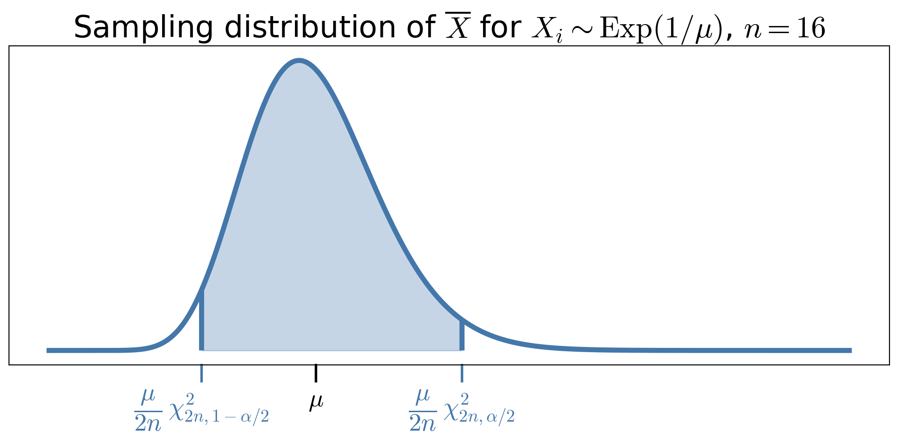
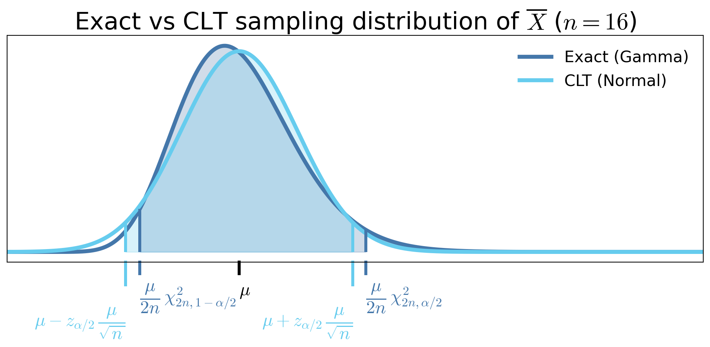
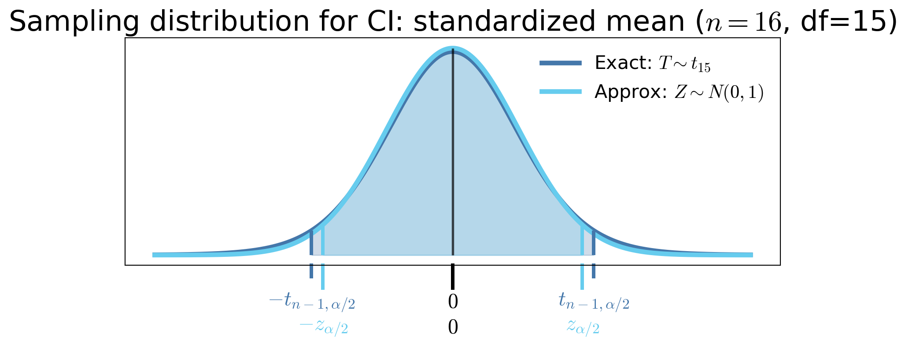

MATH 563 — Mathematical Statistics
Estimators and Confidence Intervals
Casella & Berger Ch. 5–7 (parts)
Assignment 3 due 2/13
Test 1 on 2/26 on Probability Review, Estimators, & Confidence Intervals
Fred J. Hickernell
February 19, 2026
How to Learn This Subject
- Make sure you understand the slides
- Ask questions for clarification
- Do the assignments
- Work out problems in the text that are not assigned, or convince yourself that you could do them
- Practice on old tests
- Do the \(\exstar\) exercises
- Make up questions and quiz your friends
Estimators/Estimates
Estimator: a random variable (or function of the sample) used to approximate an unknown parameter Estimate: the realized numerical value of an estimator after observing the data
Summary statistics
(CB §5.3, §5.4, §6.1; WMS §6.7, §8.1, §9.6)
Given IID data, \(X_1, \ldots, X_n\), we often compute
Empirical Distribution \(F_{\{X_i\}}(x) := \frac 1n \sum_{i=1}^n \indic(X_i \le x)\)
Sample Mean \(\displaystyle \barX = \barX_n := \frac{1}{n} \sum_{i=1}^n X_i = \int x \, \dif F_{\{X_i\}}(x) = \Ex_{F_{\{X_i\}}}(X)\) to approximate the population mean \(\mu := \Ex[X_1]\)
Sample Variance \(S^2 =S^2_n := \displaystyle \frac{1}{n-1} \sum_{i=1}^n (X_i - \barX_n)^2\) to approximate the population variance \(\sigma^2 := \var(X_1) := \Ex[(X_1-\mu)^2]\)
- Sometimes \(\hsigma^2 = \hsigma^2_n := \displaystyle \frac{1}{\class{alert}{n}} \sum_{i=1}^n (X_i - \barX_n)^2\)
- Order Statistics \(X_{(1)}, X_{(2)}, \ldots\), reorder the data so that \[ X_{(1)} \le X_{(2)} \le \cdots \le X_{(n)}, \qquad \text{i.e., } X_{(i)} = Q_{\{X_i\}}(i/n)
\] where \(Q_{\{X_i\}}\) is the quantile function corresponding to the empirical distribution
- \(X_{(1)}\) is the minimum and \(X_{(n)}\) is the maximum of the data
- \(X_{(i)}\) is often an estimator of the population quantile \(Q_X(p)\) for \(p \approx i/(n+1)\) or \((i-1/2)/n\)
Given IID data, \((X_1, Y_1), \ldots, (X_n,Y_n)\), with sample mean \((\barX_n, \barY_n)\), we often compute
Sample Covariance \(\displaystyle S_{XY} := \frac{1}{n-1} \sum_{i=1}^n (X_i - \barX_n)(Y_i - \barY_n)\) to approximate the population covariance \(\cov(X_1,Y_1) := \Ex[(X_1 - \mu_X)(Y_1 - \mu_Y)]\)
Sample Correlation \(\displaystyle R_{XY} := \frac{S_{XY}}{\sqrt{S^2_X S^2_Y}}\) to approximate the population correlation \(\displaystyle \corr(X_1,Y_1) := \frac{\cov(X_1,Y_1)}{\sigma_X \sigma_Y}\)
Maximum likelihood estimators
(CB §7.2.2; WMS §9.7)
The joint density of data, \(\vX = (X_1, \ldots, X_n)^\top\) given a parameter, \(\vtheta\), is \(\varrho_{X_1, \ldots, X_n| \vtheta}\). The likelihood, \(L\) turns that around to make the parameter the variable, so \[\begin{align*} L(\vtheta | x_1, \ldots, x_n) & := \varrho_{X_1, \ldots, X_n | \vtheta}(x_1, \ldots, x_n) \\ & = \prod_{i=1}^n \varrho_{X_1 |\vtheta}(x_i) \qquad \text{if } X_1, \ldots, X_n \text{ are } \IID \end{align*}\]
The maximum likelihood estimator (MLE) of \(\vtheta\) is the one that fits the observed data best in terms of \[ \vTheta_{\MLE} = \Argmax{\vtheta} L(\vtheta | X_1, \ldots, X_n) \]
It may be easier to work with the log-likelihood \(\ell(\vtheta) := \log(L(\vtheta))\) since the logarithm is a monotone transformation, so \[ \vTheta_{\MLE} = \Argmax{\vtheta} \ell(\vtheta | X_1, \ldots, X_n) \]
\(\exstar\) What is the MLE of \(p\) for the distribution \(\Bern(p)\)?
\(\exstar\)What is the MLE of \(\lambda\) for \(\Exp(\lambda)\)? What are the MLE of \(\mu=\Ex(X)\) and \(\sigma^2=\var(X)\) for \(X\sim\Exp(\lambda)\)?
\(\exstar\) What are the MLE of \(\mu\) and \(\sigma\) for \(X \sim \Norm(\mu,\sigma^2)\)?
Plug-in estimators
- If \(\hTheta_1\) is an estimator of \(\theta_1\) and \(\theta_2 = g(\theta_1)\), then \(\hTheta_2 : = g(\hTheta_1)\) is a plug-in estimator of \(\theta_2\)
- If \(\hTheta_1\) is MLE of \(\theta_1\) and \(\theta_2 = g(\theta_1)\), then \(\hTheta_2 : = g(\hTheta_1)\) is an MLE of \(\theta_2\)
Properties of Estimators
Bias, variance, and mean squared error of estimators
(CB §7.3.1; WMS §§8.2–8.4)
Suppose that \(\Theta\) is an estimator of a parameter, \(\theta\), of a population
Bias \(\bias(\Theta) = \Ex(\Theta) - \theta\)
- Asymptotic bias is \(\displaystyle \lim_{n \to \infty} \bias(\Theta_n)\), where \(n\) is the size of the sample on which the estimator is based
- An estimator is unbiased if \(\bias(\Theta) = 0\)
- \(\barX_n\) is an unbiased estimator of \(\mu = \Ex(X_1)\) for identically distributed data
Variance we already know this definition
- \(\var(\barX_n) \exeq \var(X_1)/n\) for uncorrelated, identically distributed data
Mean squared error \(\mse(\Theta) := \Ex[(\Theta - \theta)^2] \exeq [\bias(\Theta)]^2 + \var(\Theta)\)
Standard Error \(\se(\Theta) := \sqrt{\var(\Theta)}\) is the standard deviation of the sampling distribution of \(\Theta\)
- \(\se(\barX_n) = \sqrt{\var(\barX_n)}\)
\(\exstar\) Show that \(S^2 := \displaystyle \frac{1}{n-1} \sum_{i=1}^n (X_i - \barX_n)^2\) is an unbiased estimator of \(\sigma^2\)
\(\exstar\) Show that \(S = \sqrt{S^2}\) as an estimator of \(\sigma\) has negative bias (see Jensen’s inequality)
\(\exstar\) Is the MLE of \(\sigma=\std(X)\) for \(X\sim\Exp(\lambda)\) unbiased?
\(\exstar\) What is the MLE \(\theta\) of \(\theta\) for \(X \sim \Unif(0,\theta)\)?
Distributions of estimators (see Important Distributions)
(CB §5.2–5.4; WMS §§7.2)
For the sample mean \(\barX_n\), based on IID data
\(n \barX_n \sim \Bin(n,p)\) if \(X \sim \Bern(p)\)
\(\barX_n \exsim \Gam(n, n \lambda)\) if \(X \sim \Exp(\lambda)\) where \(\displaystyle \varrho_{\Gam(\alpha, \beta)}(x) = \frac{\beta^{\alpha}}{\Gamma(\alpha)}\, x^{\alpha-1} \exp(-\beta x) \quad x>0\)
- Note: \(\Gamma(n) = (n-1)!\) for integer \(n\)
- \(\Gam(\alpha, \beta)\) is the generic gamma distribution with shape \(\alpha\) and rate \(\beta\)
- \(\lambda n \barX_n \exsim \Gam(n, 1)\)
- \(2 \lambda n \barX_n \exsim \chi^2_{2n}\), where \(\displaystyle \varrho_{\chi^2_\nu}(x) = \frac{x^{\nu/2 - 1} \exp(-x/2)}{2^{\nu/2} \Gamma(\nu/2)} \quad x > 0\)
For the sample mean \(\barX_n\), based on IID data (cont’d)
\(\barX_n \exsim \Norm(\mu,\sigma^2/n)\) if \(X \sim \Norm(\mu,\sigma^2)\)
\(\barX_n \appxsim \Norm(\mu,\sigma^2/n)\) for arbitrary distributions and large \(n\) by the Central Limit Theorem
\(\displaystyle \frac{\barX_n - \mu}{S_n/\sqrt{n}} \sim t_{n-1}\) if \(X \sim \Norm(\mu,\sigma^2)\) where
\(\displaystyle S_n^2 := \frac{1}{n-1} \sum_{i=1}^n (X_i - \barX_n)^2\)
\(t_\nu\) is the Student’s t distribution with \(\nu\) degrees of freedom
- \(\displaystyle \varrho_{t_\nu}(x) = \frac{\Gamma\!\left(\frac{\nu+1}{2}\right)}{\sqrt{\nu\pi}\,\Gamma\!\left(\frac{\nu}{2}\right)}\left(1+\frac{x^2}{\nu}\right)^{-(\nu+1)/2}, \quad \infty < x < \infty\)
- Symmetric about \(0\)
- Heavier tails than the standard normal
- \(\exstar\) Converges to \(N(0,1)\) as \(\nu \to \infty\)
For the unbiased sample variance, \(S_n^2\), for \(\Norm(\mu,\sigma^2)\) based on IID data
- \(\displaystyle \frac{(n-1) S_n^2}{\sigma^2} \sim \chi^2_{n-1}\)
For order statistics, \(X_{(k)}\), \(\displaystyle F_{X_{(k)}}(x) = \sum_{j=k}^n \binom{n}{j} [F_X(x)]^j [1 - F_X(x)]^{n-j}\) for IID data from CDF \(F_X\)
\(\exstar\) Is the MLE \(\theta\) of \(\theta\) for \(X \sim \Unif(0,\theta)\) unbiased? Can you modify it to be unbiased?
Estimators for exponential families of distributions
Recall that exponential families of distributions have PMF or PDF that can be expressed as \[ \varrho(\vx ; \vtheta) = h(\vx) \, c(\vtheta) \, \exp \biggl(\sum_k w_k(\vtheta) t_k(\vx) \biggr) \quad \vx \in \reals^d \] The binomial, exponential, and normal are all exponential families
1. Likelihood equations depend on sample averages
The log-likelihood for IID \(X_1,\dots,X_n\) is \[ \ell(\vtheta) : = \log(L(\vtheta)) = \sum_{i=1}^n \log \bigl(h(\vX_i) \bigr) + n \log \bigl( c(\vtheta) \bigr) +\sum_{k} w_k(\vtheta)\Biggl[ \sum_{i=1}^{n} t_k(\vX_i) \Biggr] \] Solving for the MLE depends on the data only through the averages: \(\displaystyle \frac 1n \sum_{i=1}^{n} t_k(\vX_i)\)
- \(\Bern(\mu)\) and \(\Exp(\lambda)\): \(\displaystyle \frac 1n \sum_{i=1}^{n} X_i\), \(\Norm(\mu,\sigma^2)\): \(\displaystyle \frac 1n \sum_{i=1}^{n} X_i\) and \(\displaystyle \frac 1n \sum_{i=1}^{n} X_i^2\)
2. Sampling distributions are often known
Because sums or averages of exponential family data have known distributions, the distribution of the estimator is often explicit
- \(\Bern(p)\): \(n\barX \sim \text{Binomial}(n,p)\)
- \(\Exp(\lambda)\): \(\barX \sim \Gam(n,\;n\lambda)\) (shape–rate)
- \(\Norm(\mu,\sigma^2)\): \(\barX \sim \Norm(\mu,\sigma^2/n)\)
This buys us
- Exact bias and variance, e.g. for \(X \sim \Exp(\lambda)\), \(\hlambda_{\MLE} \exeq 1/\barX\) and \(\displaystyle \Ex(\hlambda_{\MLE}) \exeq \frac{n \lambda}{n-1}\) for \(n > 1\)
- Exact or near-exact confidence intervals
3. Bias behavior is transparent
Although many MLEs are asymptotically unbiased, they are biased for finite sample size, but the bias is computable
Although
\[\theta_2 = g(\theta_1) \implies \Theta_{2,\MLE} = g(\Theta_{1,\MLE})\]
one also has
\[ \Theta_{1,\MLE} \text{ unbiased } \notimplies \Theta_{2,\MLE} \text{ unbiased}\]
Confidence Intervals
(CB §9.1; WMS §8.5)
If
\(\theta\) is a parameter of interest of a distribution, and
\(X_1, \ldots, X_n\) are data that we assume are collected from that distribution,
then we try to construct random quantities \(\Theta_L\) and/or \(\Theta_U\), depending only on the data (and not on \(\theta\)), that give intervals which capture \(\theta\) with high probability \(1-\alpha\). Depending on the situation, this means constructing
a two-sided interval with \(\Prob(\Theta_L \le \theta \le \Theta_U) \ge 1-\alpha\), or
a one-sided lower interval with \(\Prob(\Theta_L \le \theta) \ge 1-\alpha\), or
a one-sided upper interval with \(\Prob(\theta \le \Theta_U) \ge 1-\alpha\)
The bounds \(\Theta_L\) and \(\Theta_U\) are random because they depend on random data. Here \(\alpha\) is our willingness to be wrong, typically \(\alpha = 5\%\).
More about confidence intervals:
- In many continuous cases, the probability is exactly \(1-\alpha\)
- For discrete distributions, the probability is often slightly larger than \(1-\alpha\)
This process often proceeds by
- Identifying a estimator \(\Theta\) for \(\theta\) that depends only on the data
- Finding the the sampling distribution of the estimator \(\Theta\)
- Using the sampling distribution to find quantiles that give the desired coverage probability
- Critical value notation
- Large sample size confidence intervals for means
- Small sample size confidence intervals for means when the distribution is known
- Confidence intervals for means of differences
- Confidence intervals for proportions
- Confidence intervals for variances
- Bootstrap confidence intervals
- Summary of common confidence intervals and their assumptions
Upper critical values
For a distribution with CDF \(F\) and quantile function \(Q\), define the upper critical value \[ c_{\alpha} := Q(1-\alpha), \quad \text{i.e., } F(c_{\alpha}) \ge 1-\alpha \text{ and } F(c_{\alpha} - \epsilon) < 1-\alpha \; \forall \epsilon > 0 \]
Examples
- \(z_{\alpha} = Q_{\Norm(0,1)}(1-\alpha)\)
- \(t_{\nu,\alpha} = Q_{t_\nu}(1-\alpha)\)
- \(\chi^2_{\nu,\alpha} = Q_{\chi^2_\nu}(1-\alpha)\)
These upper critical values are not \(\alpha\)-quantiles.
Large sample size confidence intervals for means
(CB §9.2; WMS §§8.6–8.7)
If \(X_1, \ldots, X_n\) are IID with mean \(\mu\) and variance \(\sigma^2 < \infty\), and
\(\barX_n\) is the sample mean,
\(S_n^2\) is some estimate of the unknown population variance \(\sigma^2\) (e.g., unbiased or MLE)
then by the Central Limit Theorem \[ \frac{\barX_n - \mu}{\sigma/\sqrt{n}} \appxsim \Norm(0,1) \quad \text{for large } n \]
\[ \frac{\barX_n - \mu}{\sigma/\sqrt{n}} \appxsim \Norm(0,1) \quad \text{for large } n \]
Letting \(z_{\alpha/2}\) be the upper \(\alpha/2\) quantile of \(\Norm(0,1)\), i.e., \(z_{\alpha/2} = Q_{\Norm(0,1)}(1 - \alpha/2)\), then \[\begin{align*} 1 - \alpha & \approx \Prob \biggl( -z_{\alpha/2} \le \frac{\barX_n - \mu}{\sigma/\sqrt{n}} \le z_{\alpha/2} \biggr) \\ & \approx \Prob \biggl( \barX_n - z_{\alpha/2} \frac{\sigma}{\sqrt{n}} \le \mu \le \barX_n + z_{\alpha/2} \frac{\sigma}{\sqrt{n}} \biggr) \\ & \approx \Prob \biggl( \underbrace{\barX_n - z_{\alpha/2} \frac{S_n}{\sqrt{n}}}_{\Theta_L} \le \mu \le \underbrace{\barX_n + z_{\alpha/2} \frac{S_n}{\sqrt{n}}}_{\Theta_U} \biggr) \end{align*}\]
Thus, a large sample size confidence interval for \(\mu\) is \[\left[ \barX_n - z_{\alpha/2} \frac{S_n}{\sqrt{n}}, \; \barX_n + z_{\alpha/2} \frac{S_n}{\sqrt{n}} \right]\]
See the Approval Ratings example for an illustration of this construction for a Bernoulli mean
Example: You observe \(\barX_n = 12.0\) minutes for taxis to arrive.You construct a 95% confidence interval for the mean arrival time, \(\mu\), assuming that the arrival times are distributed \(\Exp(1/\mu)\). Recall that \(\mu = \sigma = 1/\lambda\).


Small sample size confidence intervals for means when the distribution is known
(CB §9.2; WMS §8.8–8.9)
If the sample sizem \(n\), is not large enough for the Central Limit Theorem to apply,
But the sample mean has a known distribution, then exact confidence intervals can sometimes be constructed
Confidence interval for the mean of an exponential distribution
You observe \(\barX_n = 12.0\) minutes for taxis to arrive.based on \(n\) observations. You construct a \(95\%\) confidence interval for the mean arrival time, \(\mu\), assuming that the arrival times are distributed \(\Exp(1/\mu)\). Recall that \(\mu = \sigma = 1/\lambda\). Since we have the true distribution of \(\barX_n\):
\[\begin{align*} 2\lambda n \barX_n &\sim \chi^2_{2n} \\ \implies 1-\alpha &= \Prob \bigl( \chi^2_{2n,\,1-\alpha/2} \le 2\lambda n \barX_n \le \chi^2_{2n,\,\alpha/2} \bigr) \\[6pt] &= \Prob \biggl( \frac{\chi^2_{2n,\,1-\alpha/2}}{2 n \barX_n} \le \lambda \le \frac{\chi^2_{2n,\,\alpha/2}}{2 n \barX_n} \biggr) \\[10pt] &= \Prob \biggl( \frac{2 n \barX_n}{\chi^2_{2n,\,\alpha/2}} \le \mu \le \frac{2 n \barX_n}{\chi^2_{2n,\,1-\alpha/2}} \biggr), \end{align*}\]

Exact vs CLT sampling distribution of \(\overline{X}\), when \(X_i \sim \Exp(1/\mu)\)

Exact vs CLT confidence intervals for \(\mu\), when \(X_i \sim \Exp(1/\mu)\) (two sample sizes)
- For small \(n\)
- Exact confidence interval can be substantially different from the CLT-based interval
- CLT interval is symmetric about \(\bar X_n\), while the exact interval is not
- As \(n\) increases
- CLT-based interval approaches the exact interval
CI for the mean of Normal data with unknown variance
If \(X_1, \ldots, X_n\) are IID \(\Norm(\mu, \sigma^2)\), then \(\displaystyle\frac{\barX_n - \mu}{S_n/\sqrt{n}} \sim t_{n-1}\) for all \(n \ge 2\), where \(S_n^2\) is the unbiased sample variance estimator. Letting \(t_{n-1,\alpha/2}\) be the upper \(\alpha/2\) quantile of \(t_{n-1}\), then
\[
\Prob \biggl( \barX_n - t_{n-1,\alpha/2} \frac{S_n}{\sqrt{n}} \le \mu \le \barX_n + t_{n-1,\alpha/2} \frac{S_n}{\sqrt{n}} \biggr) = 1 - \alpha
\]
Student’s \(t\) CIs are wider than CLT Normal CIs for small \(n\) because \(t_{n-1,\alpha/2} > z_{\alpha/2}\)
But they are exact and thus more accurate for all \(n \ge 2\) when the data are Normal

CI for a binomial proportion when no failures are observed
You draw \(n\) IID samples of your product to test for failure, and none of the samples fail. What is your confidence interval for \(p\), the probability that a product is satisfactory?
Let \(X_i = 1\) if the \(i\)th product is satisfactory and \(0\) otherwise. Note that \[\begin{gather*} X_i = \begin{cases} 1, & \text{satisfactory},\\ 0, & \text{failure}, \end{cases} \qquad X_i \sim \Bern(p), \quad p=\Prob(\text{satisfactory}), \\ T := \sum_{i=1}^n X_i \quad \text{(\# satisfactory)} \sim \Bin(n,p). \end{gather*}\]
Want a one-sided confidence interval for \(p\) of the form \([P_L,1]\); confidence in our product quality
\(P_L\) is a random variable, defined as a function of \(T\)
- If true success probability \(< P_L\), then observing \(\ge T\) successes is quite unlikely
We define a function \(p_{L,\alpha} : \{0,1,\ldots,n\} \to [0,1]\) implicitly by requiring that \[ \Prob_{\Bin(n,p_{L,\alpha}(t))}\bigl(T \ge t\bigr) = \alpha \qquad \forall t \in \{0,1,\ldots,n\} \] The random lower confidence limit is then \(P_L := p_{L,\alpha}(T)\)
\([P_L,1]\) takes the form \(P_L := p_{L,\alpha}(T)\), with \[ \Prob_{\Bin(n,p_{L,\alpha}(t))}\bigl(T \ge t\bigr) = \alpha \qquad \forall t \in \{0,1,\ldots,n\}. \] In our case the realized confidence interval based on \(n\) successes is \([p_{L,\alpha}(n),1]\), so \[ [p_{L,\alpha}(n)]^n = \Prob_{\Bin(n,p_{L,\alpha}(n))}\bigl(T \ge n\bigr) = \alpha \iff p_{L,\alpha}(n) = \alpha^{1/n} \]
| \(n\) | 5 | 10 | 20 | 100 |
|---|---|---|---|---|
| \(p_L = \alpha^{1/n}\) | 0.5493 | 0.7411 | 0.8609 | 0.9705 |
Why was the exact confidence interval for exponential and normal data “easy”, but not Bernoulli data?
A pivot is a function of the data and the parameter whose distribution does not depend on unknown parameters:
\[ \begin{array}{rcrll} X_1,\ldots,X_n \sim \Exp(1/\mu) &:& \displaystyle \frac{2 n \barX_n}{\mu} &\sim \chi^2_{2n} &\quad \text{✓ no } \mu \\[1.2em] X_1,\ldots,X_n \sim \Norm(\mu,\sigma^2) &:& \displaystyle \frac{\barX_n - \mu}{S_n/\sqrt{n}} &\sim t_{n-1} &\quad \text{✓ no } \mu,\sigma^2 \\[1.2em] X_1,\ldots,X_n \sim \Bern(p) &:& \displaystyle n\barX_n &\sim \Bin(n,p) &\quad \text{✗ depends on } p \end{array} \]
If we can find a pivot, we can invert probability statements to get a confidence interval more easily
Confidence Intervals for Means of Differences
For paired or matched data (before/after, twins, same subject measured twice) \[ D_i = X_i - Y_i, \quad i = 1,\dots,n \]
Inference is about the mean difference \(\mu_D\) (paired setting)
Not difference of means \(\mu_X - \mu_Y\) (unpaired), even though \(\barD_n= \barX_n - \barY_n\)
If \(D_1,\dots,D_n \IIDsim \Norm(\mu_D, \sigma_D^2)\) \[ \Prob\left[ \barD_n - t_{n-1,\alpha/2}\frac{S_{D,n}}{\sqrt{n}} \le \mu_D \le \barD_n + t_{n-1,\alpha/2}\frac{S_{D,n}}{\sqrt{n}} \right] = 1 - \alpha \] where \(\displaystyle S_{D,n}^2 = \frac 1{n-1} \sum_{i=1}^n (D_i - \barD_n)^2\)
If \(D_1,\dots,D_n\) are IID with finite variance, and \(n\) is large \[ \Prob\left[ \barD_n - z_{\alpha/2}\frac{S_{D,n}}{\sqrt{n}} \le \mu_D \le \barD_n + z_{\alpha/2}\frac{S_{D,n}}{\sqrt{n}} \right] \approx 1 - \alpha \]
Confidence Intervals for Differences of Means
For two independent samples (control/treatment, two groups)
\[ X_1,\dots,X_{n_X} \sim \text{population 1}, \quad Y_1,\dots,Y_{n_Y} \sim \text{population 2} \]
with sample means \(\barX_{n_X}, \barY_{n_Y}\) and sample variances \(S_{X,n_X}^2, S_{Y,n_Y}^2\)
Pooled-\(t\) confidence interval (Wackerly)
Assume that the two populations:
- Are sampled independently
- Are Normal
- Have a common variance \(\sigma^2\)
Define the pooled variance estimator of \(\sigma^2\) as \[ S_p^2 = \frac{(n_X-1)S_{X,n_X}^2 + (n_Y-1)S_{Y,n_Y}^2}{n_X + n_Y - 2}. \]
Then a \(t\)-based confidence interval for \(\mu_X - \mu_Y\) is
\[\begin{multline*} \Prob\left[ (\barX_{n_X}-\barY_{n_Y}) - t_{n_X+n_Y-2,\alpha/2} \, S_p \sqrt{\frac{1}{n_X} + \frac{1}{n_Y}} \le \mu_X - \mu_Y \right . \\ \left . \le (\barX_{n_X}-\barY_{n_Y}) + t_{n_X+n_Y-2,\alpha/2} \, S_p \sqrt{\frac{1}{n_X} + \frac{1}{n_Y}} \right] = 1 - \alpha. \end{multline*}\]
Other variations exist (Welch two-sample \(t\), unequal variances).
CLT-based interval (large samples)
If \(n_X\) and \(n_Y\) are large and the samples are independent, then a CLT-based confidence interval applies even if the two populations:
- need not be Normal
- need not have a common variance
\[\begin{multline*} \Prob\left[ (\barX_{n_X}-\barY_{n_Y}) - z_{\alpha/2} \sqrt{\frac{S_{X,n_X}^2}{n_X}+\frac{S_{Y,n_Y}^2}{n_Y}} \le \mu_X - \mu_Y \right . \\ \left . \le (\barX_{n_X}-\barY_{n_Y}) + z_{\alpha/2} \sqrt{\frac{S_{X,n_X}^2}{n_X}+\frac{S_{Y,n_Y}^2}{n_Y}} \right] \approx 1 - \alpha. \end{multline*}\]
\(\exstar\) Exercises regarding confidence intervals for different kinds of means
- \(X_1,\dots,X_{100}\) and \(Y_1,\dots,Y_{100}\) are two samples with sample means \(\barX, \barY\) and sample standard deviations \(S_X, S_Y\), respectively
- \(D_i = X_i - Y_i\) and \(S_D\) be the sample standard deviation of the \(D_i\)
- You observe \(\barx = 85, \bary = 75, s_X = 10, s_Y = 12, s_D = 4\)
Construct the appropriate 95% confidence intervals for the following scenarios:
\(X_1,\dots,X_{100}\) are IID test scores from a population of medical students. Construct a 95% confidence interval for the mean test score of the whole population and interpret the interval in context.
\(X_1,\dots,X_{100}\) and \(Y_1,\dots,Y_{100}\) are two independent IID samples of test scores from two different populations of medical students. The first group was given a practice test beforehand, and the second group was not. Construct a 95% confidence interval for the difference in mean test scores between the two populations and interpret the interval in context.
\(X_1,\dots,X_{100}\) and \(Y_1,\dots,Y_{100}\) are two IID samples of test scores from the same population of medical students. The \(X_i\)’s are the students’ scores on the real test, and the \(Y_i\)’s are the students’ scores on the practice test taken earlier. Construct a 95% confidence interval for the mean difference in test scores between the practice and real tests.
Confidence Interval for Proportions (CLT)
One proportion
- \(X_1,\dots,X_n \IIDsim \Bern(p)\) (\(p =\) probability of success shooting free throws, product quality control, etc.)
- \(P_n = \frac{1}{n}\sum_{i=1}^n X_i =\) sample proportion of successes
- \(\Ex[P_n] = p\) and \(\var(P_n) = p(1-p)/n\)
If \(n\) is large, an approximate CLT-based interval for \(p\) is
\[\begin{equation*} \Prob\left[ P_n - z_{\alpha/2}\sqrt{\frac{P_n(1-P_n)}{n}} \le p \le P_n + z_{\alpha/2}\sqrt{\frac{P_n(1-P_n)}{n}} \right] \approx 1-\alpha \end{equation*}\]
Difference of two proportions
Independent samples \[\begin{gather*} X_1,\dots,X_{n_X} \IIDsim \Bern(p_X), \qquad Y_1,\dots,Y_{n_Y} \IIDsim \Bern(p_Y) \\ P_X = \frac{1}{n_X}\sum X_i, \qquad P_Y = \frac{1}{n_Y}\sum Y_j \end{gather*}\]
If \(n_X\) and \(n_Y\) are large, an approximate CLT-based confidence interval for \(p_X - p_Y\) is
\[\begin{multline*} \Prob\left[ (P_X-P_Y) - z_{\alpha/2} \sqrt{\frac{P_X(1-P_X)}{n_X} + \frac{P_Y(1-P_Y)}{n_Y}} \right . \\ \left . \le p_X - p_Y \le (P_X-P_Y) + z_{\alpha/2} \sqrt{\frac{P_X(1-P_X)}{n_X} + \frac{P_Y(1-P_Y)}{n_Y}} \right] \approx 1-\alpha \end{multline*}\]
Confidence Interval for a Variance
Let \(X_1,\dots,X_n \IIDsim \Norm(\mu,\sigma^2)\) with sample variance \(S_n^2\)
Then \[ \frac{(n-1)S_n^2}{\sigma^2} \sim \chi^2_{n-1} \]
and a \((1-\alpha)\) confidence interval for \(\sigma^2\) is
\[\begin{equation*} \Prob\!\left[ \frac{(n-1)S_n^2}{\chi^2_{n-1,\alpha/2}} \le \sigma^2 \le \frac{(n-1)S_n^2}{\chi^2_{n-1,1-\alpha/2}} \right] = 1-\alpha \end{equation*}\]
Confidence Interval for Ratio of Variances
Let \[ X_1,\dots,X_{n_X} \IIDsim \Norm(\mu_X,\sigma_X^2), \quad Y_1,\dots,Y_{n_Y} \IIDsim \Norm(\mu_Y,\sigma_Y^2) \]
be independent samples with sample variances \(S_{X,n_X}^2, S_{Y,n_Y}^2\), respectively
Then \[ \frac{S_{X,n_X}^2 / \sigma_X^2}{S_{Y,n_Y}^2 / \sigma_Y^2} \sim F_{\,n_X-1,n_Y-1} \]
and a \((1-\alpha)\) confidence interval for \(\displaystyle \frac{\sigma_X^2}{\sigma_Y^2}\) is
\[\begin{equation*} \Prob\!\left[ \frac{S_{X,n_X}^2}{S_{Y,n_Y}^2} \frac{1}{F_{n_X-1,n_Y-1,\alpha/2}} \le \frac{\sigma_X^2}{\sigma_Y^2} \le \frac{S_{X,n_X}^2}{S_{Y,n_Y}^2} \frac{1}{F_{n_X-1,n_Y-1,1-\alpha/2}} \right] = 1-\alpha \end{equation*}\]
Bootstrap Confidence Intervals
(EH Ch. 11)
Classical confidence intervals rely on assumptions such as:
- Known or estimable variance
- Normality of the sampling distribution
- Large sample sizes (via CLT)
But in practice we often have:
- Small samples
- Skewed or heavy-tailed data
- Complicated estimators (medians, quantiles, ratios)
Bootstrap confidence intervals replace distributional assumptions with resampling from the observed data to approximate the sampling distribution of an estimator
The Bootstrap Idea
Given data \(X_1,\dots,X_n\) and an estimator \(\Theta\):
Resample with replacement from the data to form \(B\) bootstrap samples
Each bootstrap sample has size \(n\) and consists of draws from the original data \[ X_1^{(b)},\dots,X_n^{(b)} \IIDsim \text{Uniform}\{X_1,\dots,X_n\}, \quad b=1,\dots,B \]Compute the bootstrap estimators \(\Theta^{(b)}\) \[ \Theta^{(b)} = \Theta(X_1^{(b)},\dots,X_n^{(b)}), \quad b=1,\dots,B \]
Use the empirical distribution of \(\Theta^{(1)},\dots,\Theta^{(B)}\) to construct confidence intervals
A simple bootstrap percentile CI uses the order statistics of the bootstrap estimators: \[ \left[ \Theta_{(\alpha/2)}, \Theta_{(1-\alpha/2)} \right] \]
No normality · No variance formula · Works when classical assumptions fail
Example of vanilla bootstrap
We draw a single IID random sample of size \(n=8\) from a population: \[ X_1,\dots,X_{8}, \qquad \barX = \frac{1}{8}\sum_{i=1}^{8} X_i \] A vanilla bootstrap sample is obtained by sampling with replacement from the observed data \(\{X_1,\dots,X_{8}\}\). We repeat this independently to obtain bootstrap samples.
| Sample | Observations | Sample mean |
|---|---|---|
| Original | 0.07, 4.20, 0.51, 1.48, 0.44, 3.95, 2.90, 0.69 | 1.78 |
| Bootstrap 1 | 4.20, 0.69, 3.95, 0.07, 1.48, 4.20, 0.51, 0.07 | 1.90 |
| Bootstrap 2 | 0.51, 0.07, 0.07, 0.07, 4.20, 0.44, 0.51, 0.07 | 0.74 |
| Bootstrap 3 | 0.44, 0.07, 4.20, 1.48, 0.69, 0.44, 2.90, 3.95 | 1.77 |
| Bootstrap 4 | 1.48, 3.95, 0.44, 4.20, 0.51, 0.07, 0.07, 1.48 | 1.52 |
| \(\vdots\) | \(\vdots\) | \(\vdots\) |
Assumptions behind common confidence intervals
Data are IID from a distribution with finite variance
| Parameter | Distributional Assumptions | Sample Size | Method | Notes |
|---|---|---|---|---|
| \(\mu\) | Any distribution | Large \(n\) | CLT | Approximate, accuracy improves as \(n \to \infty\) |
| \(\mu\) | Normal data, \(\sigma\) unknown |
Any \(n\) | Student’s t | Exact |
| \(\mu = p\) | Bernoulli trials | Any \(n\) | Binomial (Clopper–Pearson) |
Exact Conservative |
| \(\mu = p\) | Bernoulli trials | Large \(np\), \(n(1-p)\) | CLT | Approximate |
| \(\mu\) | Exponential data | Any \(n\) | Gamma/ Chi-squared |
Exact |
| Parameter | Distributional Assumptions | Sample Size | Method | Notes |
|---|---|---|---|---|
| \(\mu_D\) (paired differences) |
Differences are Normal | Any \(n\) | Paired t | Exact, sometimes confused with two-sample t |
| \(\mu_X-\mu_Y\) | Each sample Normal; independent samples; common variance | Any \(n_X,n_Y\) | Two-sample t (pooled) | Exact |
| \(\mu_X-\mu_Y\) | Independent samples from any distributions with finite variances | Large \(n_X,n_Y\) | CLT (two-sample) | Approximate |
| \(p_X-p_Y\) | Independent samples of Bernoulli trials | Large \(n_Xp_X\), \(n_X(1-p_X)\), \(n_Yp_Y\), \(n_Y(1-p_Y)\) | CLT (two-sample) | Approximate |
| Parameter | Distributional Assumptions | Sample Size | Method | Notes |
|---|---|---|---|---|
| \(\sigma^2\) | Normal data | Any \(n\) | Chi-squared | Exact, sensitive to non-normality |
| \(\sigma_X^2/\sigma_Y^2\) | Normal data; independent samples | Any \(n_X,n_Y\) | F-distribution | Exact, sensitive to non-normality |
| \(\med(F)\) | Continuous distribution | \(n\) not too small | Order-statistics | Approximate, Distribution-free |
| \(\theta(F)\) | None (empirical distribution) | Moderate \(n\) | Bootstrap resampling | Approximate, works when classical theory breaks |
Summary
- Confidence intervals provide a range of plausible values for parameters based on data
- They go beyond point estimation by quantifying uncertainty
- Expressed in terms of random variables, confidence intervals are probabilistic statements about the data-generating process
- Realized by plugging in the observed data, confidence intervals are not probabilistic statements
- Validity of confidence intervals depends on assumptions about the data distribution and sample size(s)
- With fewer data we need stronger distributional assumptions
- With more data we can rely on asymptotic results like the CLT
- Two-sided CLT confidence intervals take the form \[\text{estimator} \pm z_{\alpha/2} \times \text{standard error}\]
Do we have the right estimators to summarize our data and construct confidence intervals?
-
- Do we have a statistic that captures all of the information about \(\vtheta\) in the data?
- Do we have a minimal statistic that compresses the data as much as possible without losing information about \(\vtheta\)?
Rao–Blackwell — better estimators through conditioning
Completeness — eliminating hidden unbiased estimators
Sufficiency
Let \(\vX =(X_1,\dots,X_n)\) have joint PMF/PDF \(\varrho(\vx \mid \vtheta)\).
A statistic \(T(\vX)\) is sufficient for \(\vtheta\) if
the conditional distribution of \(\vX\) given \(T(\vX)\)
does NOT depend on \(\vtheta\).
If a sufficient statistic, \(T\), is known, then the sample contains no additional information about \(\vtheta\)
Factorization Theorem
\(T(\vX)\) is sufficient for \(\vtheta\) iff
\[\begin{align*} \varrho(\vx \mid \vtheta) = L(\vtheta \mid \vx) & = g(T(\vx), \vtheta)\, h(\vx) \\ \text{or equivalently } \qquad \ell(\vtheta \mid \vx) = \log(L(\vtheta \mid \vx)) & = \tg(T(\vx), \vtheta) + \th(\vx) \end{align*}\]
where
- \(g\) depends on data only through \(T\)
- \(h\) does not depend on \(\vtheta\)
This is the fundamental practical tool for proving sufficiency
Example: For \(X_1, \ldots, X_n \IIDsim \Bern(p)\), the log likelihood is \[ \ell(p \mid \vx) = \sum_{i=1}^n \left [ x_i \log(p) + (1-x_i)\log(1-p) \right] = \left(\sum_{i=1}^n x_i \right) [\log(p) - \log(1-p)] + n\log(1-p) \] so \(\displaystyle T(\vX) = \sum_{i=1}^n X_i\) is sufficient for \(p\).
\(\exstar\) For \(X_1, \ldots, X_n \IIDsim \Bern(p)\) Is the statistic \(T(\vX)=X_1+X_2\) sufficient for \(p\)? Is the statistic \(T(\vX)=\left(X_1+X_2, \sum_{i=3}^n X_i\right)\) sufficient for \(p\)?
\(\exstar\) For \(X_1, \ldots, X_n \IIDsim \Exp(\lambda)\), the statistic \(\displaystyle T(\vX) = \sum_{i=1}^n X_i\) is sufficient for \(\lambda\)
\(\exstar\) For \(X_1, \ldots, X_n \IIDsim \Norm(\mu,\sigma^2)\), the statistic \(\displaystyle T(\vX) = \sum_{i=1}^n X_i\) is not sufficient for \(\mu\) and \(\sigma^2\).
\(\exstar\) Find a sufficient (vector) statistic for \(\mu\) and \(\sigma^2\) for \(X_1, \ldots, X_n \IIDsim \Norm(\mu,\sigma^2)\)
Minimal Sufficiency
A sufficient statistic \(T\) is minimal sufficient if
it is sufficient, and
it is a function of every other sufficient statistic.
A minimial sufficient statistic compresses the data as much as possible
without losing information about \(\vtheta\)
Theorem: A statistic \(T(\vX)\) is minimal sufficient if for all sample points \(\vx\), \(\vy\),
\[ \left . \begin{array}{r} \displaystyle \frac{L(\vtheta \mid \vx)}{L(\vtheta \mid \vy)} \\ \text{ or equivalently} \quad \ell(\vtheta \mid \vx) - \ell(\vtheta \mid \vy) \end{array} \right \} \text{ is independent of } \vtheta \quad \Longleftrightarrow \quad T(\vx) = T(\vy) \]
Theorem: A statistic \(T(\vX)\) is minimal sufficient if for all sample points \(\vx\), \(\vy\),
\[ \ell(\vtheta \mid \vx) - \ell(\vtheta \mid \vy) \text{ is independent of } \vtheta \quad \Longleftrightarrow \quad T(\vx) = T(\vy) \]
Proof that \(T(\vX)\) is sufficient: Suppose that \(\ell(\vtheta \mid \vx) - \ell(\vtheta \mid \vy)\) is independent of \(\vtheta\) iff \(T(\vx) = T(\vy)\)
Let
- \(\cx\) be the sample space of the data, \(\vX\)
- \(\ct : = T(\vtheta \mid \cx)\) be the image of \(T\)
For each \(t \in \ct\), find one \(\vx_t \in \cx\) such that \(T(\vx_t) = t\), and define
\(\th(x) : = \ell(\vtheta \mid \vx) - \ell(\vtheta \mid \vx_{T(\vx)})\quad \forall x\in \cx \qquad\) (independent of \(\vtheta\) by the hypothesis)
\(\tg(t,\vtheta) : = \ell(\vtheta \mid \vx_t)\quad \forall \vtheta, \forall t \in \ct\)
Then for any \(\vx \in \cx\),
\[ \ell(\vtheta \mid \vx) \underbrace{=}_{\text{def. of} \th} \th(\vx) + \ell(\vtheta \mid \vx_{T(\vx)}) \underbrace{=}_{\text{def. of} \tg} \th(\vx) + \tg(T(\vx),\vtheta) \quad \forall \vtheta, \ \forall \vx \in \cx \]
so \(T\) is sufficient
Proof that \(T(\vX)\) is minimal sufficient: Let \(T'(\vX)\) be any other sufficient statistic, so
- \(\ell(\vtheta \mid \vx) = \tg'(T'(\vx),\vtheta) + \th'(\vx)\) by the Factorization Theorem
For any \(\vx, \vy \in \cx\) with \(T'(\vx) = T'(\vy)\), we have \[ \ell(\vtheta \mid \vx) - \ell(\vtheta \mid \vy) = \tg'(T'(\vx),\vtheta) + \th'(\vx) - \tg'(T'(\vy),\vtheta) - \th'(\vy) \underbrace{=}_{\text{since } T'(\vx) = T'(\vy)} \th'(\vx) - \th'(\vy)\] which does not depend on \(\vtheta\). Thus, \(T(\vx) = T(\vy)\) by the hypothesis of the theorem.
Since \(T'(\vx) = T'(\vy) \implies T(\vx) = T(\vy)\), it follows that \(T\) is a function of \(T'\) \(\qquad \square\)
Example: For \(X_1, \ldots, X_n \IIDsim \Bern(p)\), \(\displaystyle T(\vX) = \sum_{i=1}^n X_i\) is a sufficient statistic for \(p\). To show that it is minimal sufficient, note that for any \(\vx\), \(\vy\), \[ \ell(p \mid \vx) - \ell(p \mid \vy) = \bigl(T(\vx) - T(\vy) \bigr) [\log(p) - \log(1-p)] = 0 \iff T(\vx) = T(\vy) \] so \(T(\vX)\) is minimal sufficient for \(p\)
\(\exstar\) For \(X_1, \ldots, X_n \IIDsim \Bern(p)\), is the statistic \(T'(\vX)=\left(X_1+X_2, \sum_{i=3}^n X_i\right)\) minimal sufficient for \(p\)?
Rao–Blackwell Theorem
Let \(\vTheta\) be unbiased and let \(T\) be sufficient
Define
\[ \widetilde{\vTheta} := \Ex(\vTheta \mid T) \]
Then
- \(\widetilde{\vTheta}\) is unbiased
- \(\var(\widetilde{\vTheta}) \le \var(\vTheta)\)
Conditioning on sufficient statistics improves estimators
Example: For \(X_1, \ldots, X_n \IIDsim \Bern(p)\), the statistic \(\displaystyle T(\vX) = \sum_{i=1}^n X_i\) is sufficient for \(p\). The estimator \(\Theta := X_1\) is unbiased for \(p\), but it is not a function of \(T\). The Rao–Blackwell improvement of \(\Theta\) is \[ \widetilde{\Theta} = \Ex(X_1 \mid T) = \frac{T}{n} = \frac 1n \sum_{i=1}^n X_i = \barX \]
Completeness
A statistic \(T\) is complete if
\[ \Ex_\vtheta[g(T)] = 0 \quad \forall \vtheta \quad \implies \quad g(T)=0 \text{ a.s.} \]
Completeness eliminates hidden unbiased estimators.
It is the key hypothesis in Lehmann–Scheffé.
Example: For \(X_1, \ldots, X_n \IIDsim \Bern(p)\), the statistic \(\displaystyle T(\vX) = \sum_{i=1}^n X_i\) is sufficient for \(p\). To show that it is complete, note that if \(\Ex_p[g(T)] = 0\) \[\begin{align*} 0 & =\sum_{t=0}^n g(t) \binom{n}{t} p^t (1-p)^{n-t} \\ \implies & 0 = \sum_{t=0}^n g(t) \binom{n}{t} \left( \frac{p}{1-p} \right)^t \end{align*}\] Since the right hand side is a polynomial in \(p/(1-p)\) with coefficients \(g(t) \binom{n}{t}\) that is zero for all \(p \in (0,1)\), we must have \(g(t) = 0\) for all \(t \in \{0, \ldots, n\}\), so \(g(T) = 0\) a.s.
Thus, \(T(\vX)\) is complete for \(p\in (0,1)\)
Lehmann–Scheffé Theorem
If
- \(T\) is complete and sufficient
- \(\vTheta = g(T)\) is unbiased
then \(\vTheta\) is the unique MVUE
This is the main structural route to minimum variance unbiased estimators.
Cramér–Rao Lower Bound
Under regularity conditions,
\[ \var(\vTheta) \ge \frac{1}{I(\vTheta)} \]
where
\[ I(\vtheta) = \Ex\!\left[ \left( \frac{\partial}{\partial \vtheta} \log \varrho(\vX \mid \vtheta) \right)^2 \right] \]
This gives a universal lower bound on variance of unbiased estimators.
Conceptual Pipeline
Data
\(\longrightarrow\) Sufficient statistic
\(\longrightarrow\) Complete sufficient statistic
\(\longrightarrow\) MVUE (Lehmann–Scheffé)
This is the classical parametric estimation framework.
Connection to Exponential Families
We previously defined exponential families as
\[ \varrho(\vx\mid \vtheta) = h(\vx)\, c(\vtheta)\, \exp\!\left( \sum_k w_k(\vtheta) t_k(\vx) \right). \]
For IID data,
\[ \sum_{i=1}^n t_k(\vX_i) \]
is automatically sufficient for \(\vtheta\).
In regular cases, this statistic is also
- minimal sufficient
- complete
which makes Lehmann–Scheffé especially powerful.
Why Exponential Families Make Everything Work
Because of their structure:
- finite-dimensional sufficient statistics
- minimal sufficiency automatically
- completeness (in full regular families)
- tractable Fisher information
- explicit sampling distributions
This is why classical parametric inference is so clean for
Bernoulli, Poisson, Exponential, Normal, Gamma, etc.
© 2026 Fred J. Hickernell · Illinois Institute of Technology · Course website · \(\exstar\) = exercise for the reader